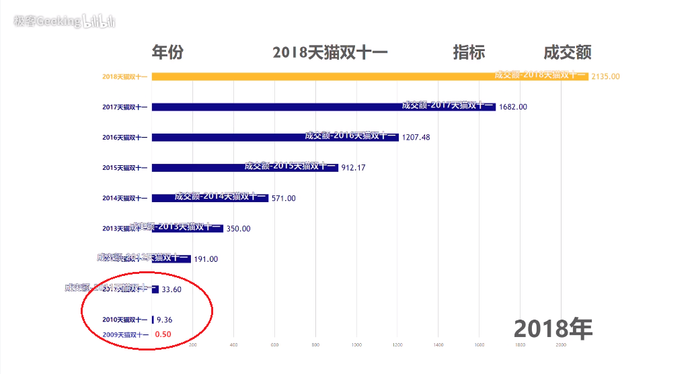

背景
双十一购物狂欢节，脱胎于商家借“光棍节”的噱头打折促销。2009年的“双十一”，淘宝/天猫举办了第一场促销活动，营业额远超预期，于是这个活动固定下来，并逐渐成为中国电商行业最大的年度盛事。
到2018年，“双十一”已经成功举办了十周年，十年来销售额持续“井喷”，每秒达上亿条的数据洪流，除了对系统的鲁棒性和调度能力产生巨大的挑战，也意味着有必要引入数据可视化的手段来更有效地呈现特征、描述趋势。
案例
在不久前的本年度“双十一”期间，视频网站哔哩哔哩上有作者制作了09—18年十年里天猫双十一成交额的数据可视化视频，直观展现了天猫双十一活动规模不断壮大的过程。
视频title
整个可视化方案以柱形图为基础、加入动态效果制作而成。柱形图左侧的竖轴对应年份，上方的横轴对应比较指标，即当年的成交额 (亿元)。动态效果体现在各年份元素不是在一开始就完全给出，而是依照时间顺序依次出场的。另外，整个柱形图的比例也是随着新元素的不断加入而不断变化的：旧一年的指标在比例尺中的长度一开始为1，在新一年的指标加入后，更新比例尺，使得新一年的指标在比例尺中的长度为1，旧年度的指标长度对应缩小，如此不断迭代；另外图中还有随比例不断变化的网格线。

09—18年成交额变化趋势动态过程
亮点
根据人类视觉感知的相对性原理 (《数据可视化的基本原理与方法》陈为, p26)，通过相对判断有助于精确地揭示数据尺度等信息。静态的柱形图应用在比例差异巨大的一组数据时，表现力是十分有限的，如下图中，09—11年成交额的差距看起来并没有很大：

09—18年成交额变化趋势静态图
然而在先前的可视化案例中可以得知，实际上这几年的增长也是很迅猛的，这个变化趋势通过动态图展现了出来。这便是该方案的一处亮点：借助动态过程来显式表达数据之间的相对关系，直观展现大尺度下小值数据的差异。